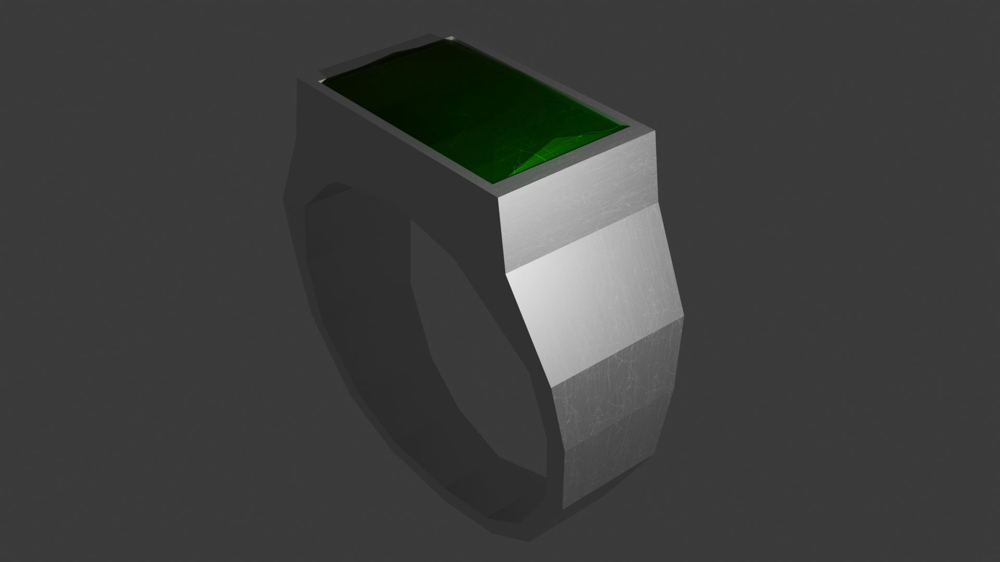

Modelo Low Poly Modelado y Texturizado en Maya. Este estilo de llamaba la atencion y ha sido muy entretenido, sobre todo el tema de la iluminación
Animación para BLV EDICION Y GESTION AUDIOVISUAL SL Proyecto realizado y renderizado en Maya y montado en Adobe Premiere Pro.
Anillo hecho en Blender para un Item del Juego Regnum Perditionis
